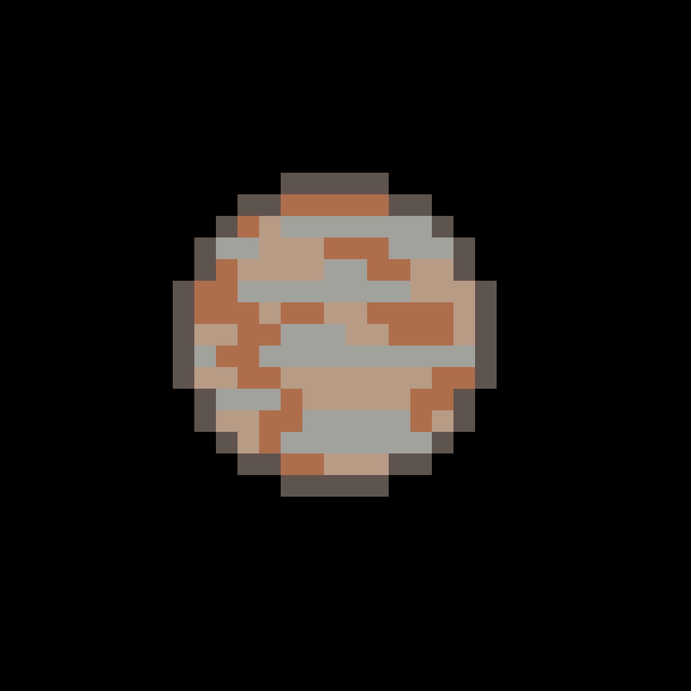

PSR B1257+12 B är en av de första planeter som upptäcktes utanför solsystemet. Den upptäcktes den 22 januari 1994 av Aleksander Wolszczan i Polen och den ligger ungefär 2300 ljusår från jorden.
Planeten kretsar runt en odöd stjärna som kallas pulsar. Det gör att PSR B1257+12 B blir ständigt träffad med radioaktiv strålning. PSR står för Pulsating Source of Radio.
